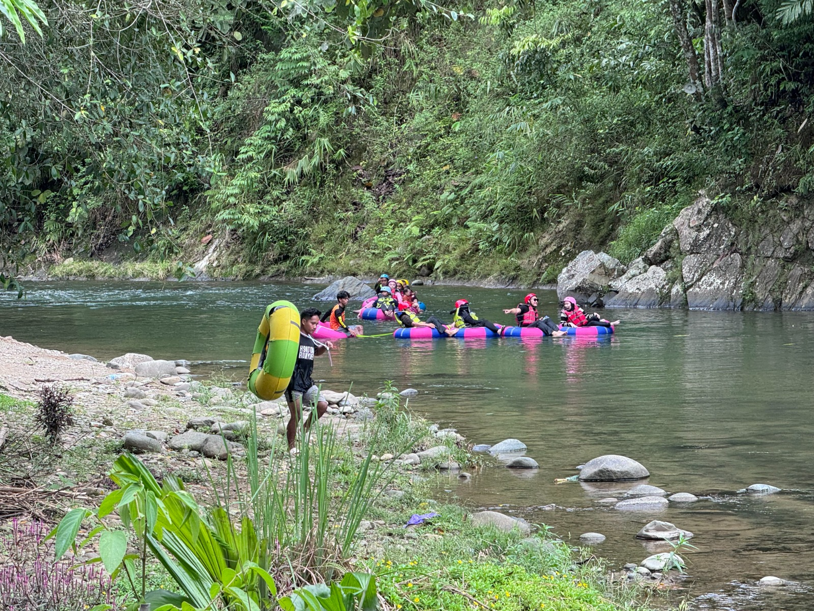

Daya Tarik Loksado
informasi

Mesjid Loksado
Masjid Jami Al-Ettihad merupakan salah satu masjid yang berada di Desa Loksado, Kecamatan Loksado, Kabupaten Hulu Sungai Selatan, Kalimantan Selatan. Masjid ini menjadi salah satu fasilitas ibadah bagi masyarakat Muslim di sekitar Loksado.

Wisata Susur Sungai
Bamboo Rafting atau Balanting Paring merupakan wisata susur Sungai Amandit menggunakan rakit bambu tradisional. Wisatawan dapat menikmati aliran sungai, hutan tropis, bebatuan, serta pemandangan Pegunungan Meratus.

Air Terjun
Air Terjun Haratai merupakan salah satu wisata alam yang terkenal di kawasan Loksado, Kabupaten Hulu Sungai Selatan, Kalimantan Selatan. Air terjun ini berada di Desa Haratai dan dikelilingi oleh hutan serta kawasan Pegunungan Meratus yang masih asri.

Villa/Penginapan
Loksado menyediakan berbagai pilihan tempat menginap bagi wisatawan yang ingin menikmati keindahan alam Pegunungan Meratus. Pengunjung dapat memilih villa, resort, maupun homestay yang berada di sekitar kawasan wisata Loksado.